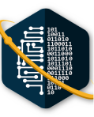

Home
Learning Videos
Content
About
COMPUTING LABORATORY
Since 2014 under Intelligence, Computing, Multimedia (ICM) expertise group, School of Computing, Telkom University this laboratory held any academic events to improve and develop skills of School of Computing, Telkom University
www.computing-telu.com
I GUSTI AGUNG ISTRI SAVITRI MAHARANI
IT-43-03 (1303193085)
Perihal: memenuhi Ulangan Tengah Semester (UTS) mata kuliah Pembrograman Web